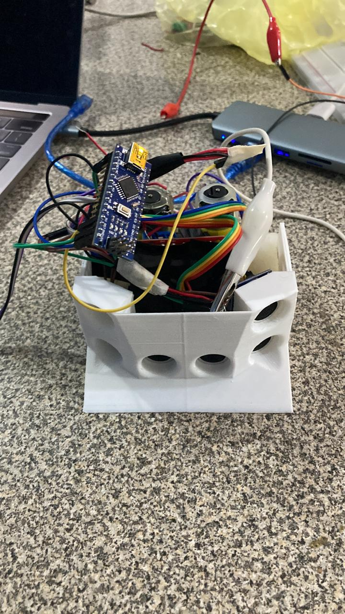
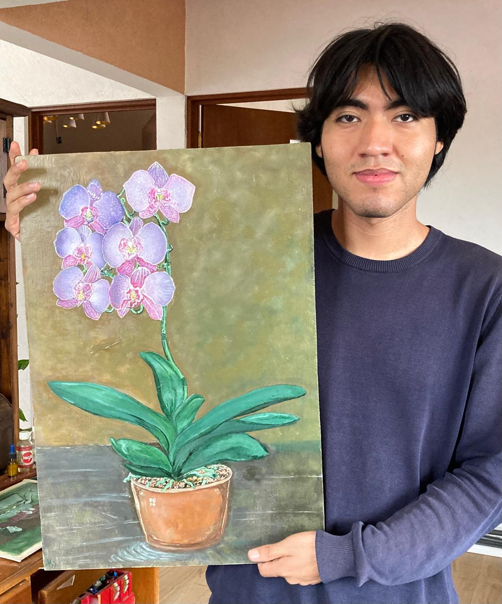

Academic Background
I am currently studying at the Faculty of Engineering of the UNAM doing a bachelor's degree in Computer Engineering. I focus on understanding system architecture at both hardware and software levels.


Areas of Interest
As a Computer Engineering student at UNAM I am really passionate about hardware, programming, and data science. I enjoy desinging and building robots, embedded systems, and databases. My goal is desing and develop solutions that improve people's lives through technology.
My Hobbies
When it comes to my hobbies, I enjoy video games like Red Dead Redemption, Minecraft, and combination of classics. I also love art and creating paintings across different styles primarily oil painting, listening to 80s and 90s music, and watching series like The Office, Breaking Bad, and The Big Bang Theory.
I also love to read in my free time, especially novels, my favorite book is Dune by Frank Herbert but I also enjoy sci-fy like Assimov's works.
